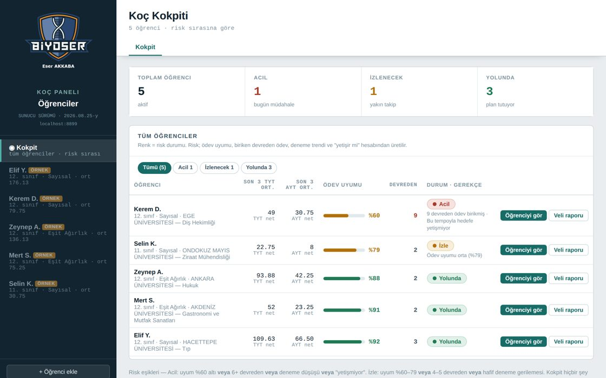
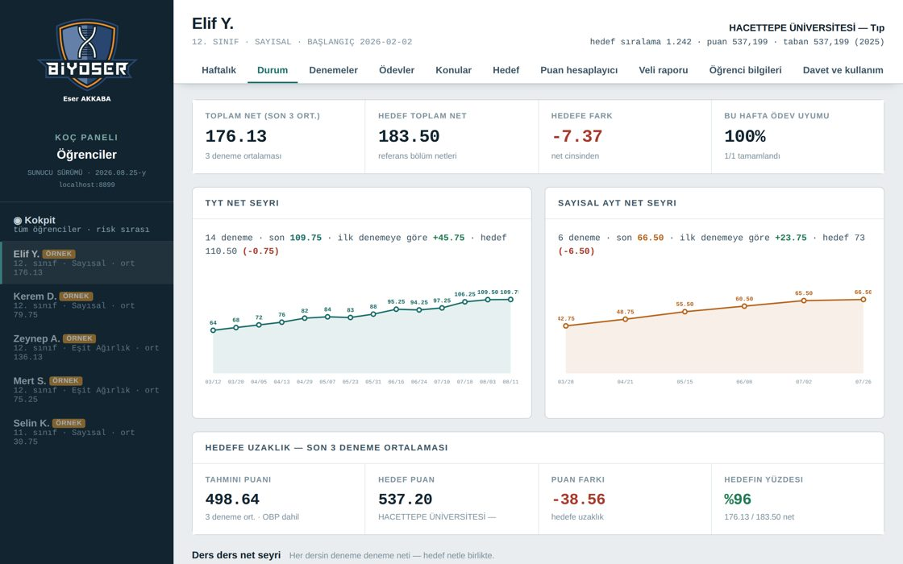
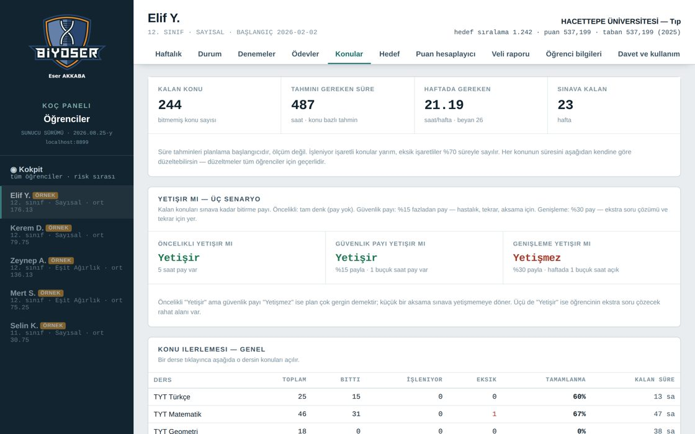
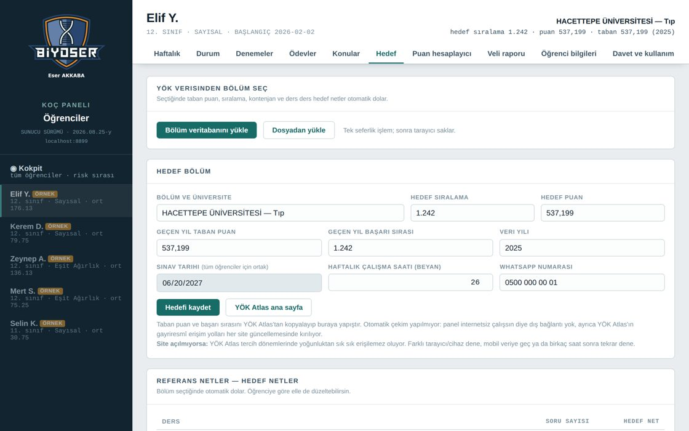
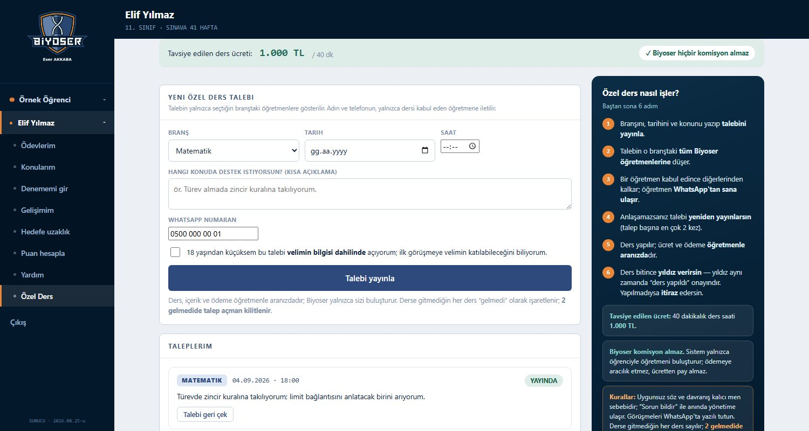
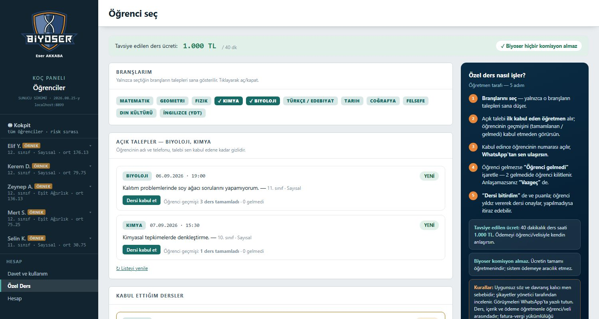
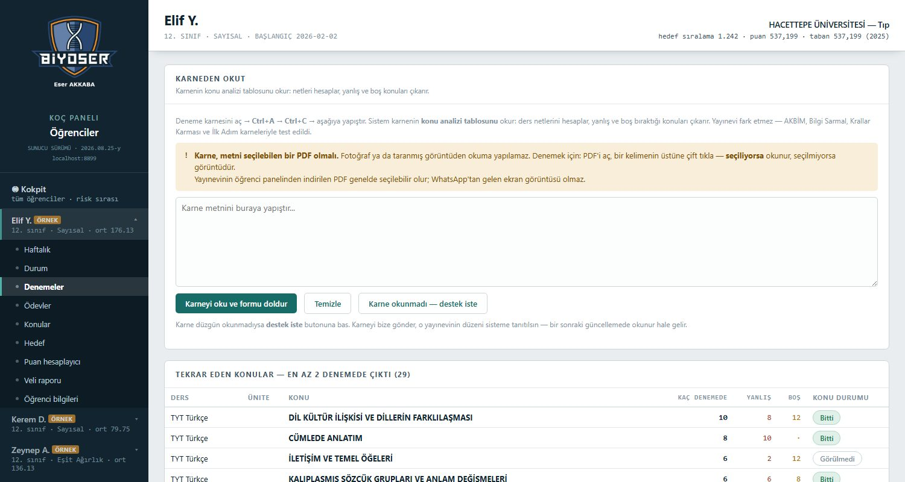
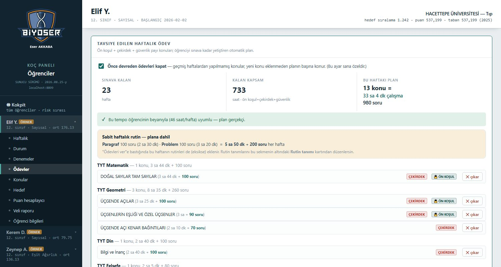
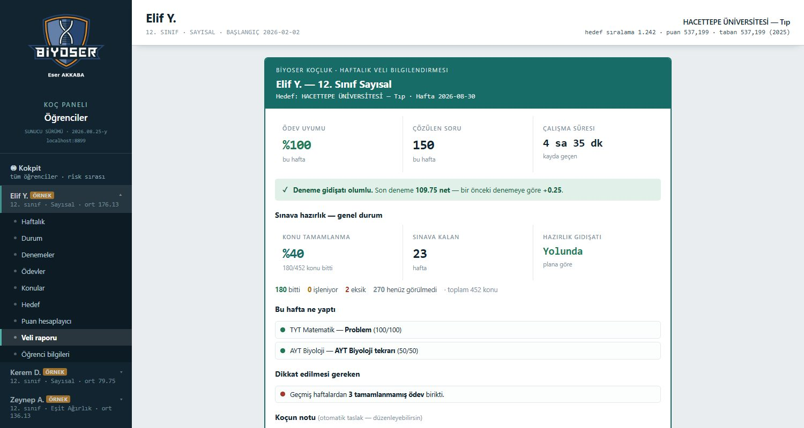

Hedef bölümünü söyle; o bölüme son giren öğrencinin netleri referans alınır, ne zaman · ne kadar · hangi konu çalışacağın çıkar. Otomatik karne analizi, konu haritası, hedefe uzaklık ve “yetişir mi” hesabı tek panelde.
▶ Önce sistemi gezOklarla gez: gerçek panel ekranları ve sistemin en önemli özellikleri — yeni Özel Ders dahil.





YENİ



Hepsi yıllık · kredi kartı yok · WhatsApp'tan paketini söyle, hesabına tanımlansın.
Kısa anlatımlar. Videolar bu sayfada açılır, başka yere gitmezsiniz.
Videolar yükleniyor…
Karnenin PDF'ini açın, Ctrl+A → Ctrl+C → panele yapıştırın. Gerisi otomatik.
Doğru, yanlış ve net değerleri hesaplanır. Her okuma net değeriyle doğrulanır; tutmayan satır kabul edilmez.
Konu analizi tablosu okunur, hangi konudan kaç yanlış ve boş yapıldığı çıkarılır.
Aynı konu birkaç denemede üst üste çıkıyorsa işaretlenir. Teşhis burada başlar.
ULTİ, Bilgi Sarmal, Krallar Karması, Hız ve Renk, Sıfır Pozitif, AKBİM ve İlk Adım karneleriyle test edildi.
Karnede matematik ve geometri ayrıysa ayrı işlenir; birleşikse toplamdan ayrıştırılır.
Tablo doldurma, sayı yazma yok. Yapıştır, kontrol et, kaydet.
Karne okuma tek başına yeterli değil; sistemin geri kalanı onun üstüne kurulu.
Ödev verirsiniz, öğrenci kendi panelinden işaretler. Yaptığı, yarım bıraktığı, hiç yapmadığı anında görünür. Bitmeyen ödev sonraki haftaya devreder.
TYT ve AYT'nin tüm konuları. Her konu için bitti, işleniyor ya da eksiğim var. Konu başına çalışma süresi ve hedef soru sayısı düzenlenebilir; yanındaki ▶ ile o konunun anlatım videosu araması açılır.
YÖK verisinden bölüm seçersiniz; taban puan, sıralama ve o bölüme yerleşenlerin ders ders net ortalamaları gelir. Puan hesaplayıcıyla netlerden puan ve sıralama tahmini de alırsınız.
Öğrenci uygulama indirmez. Gönderdiğiniz bağlantıya tıklar, hesabını açar. Telefondan, tabletten, bilgisayardan aynı veriye ulaşır.
Kalan konuların öğrenme süresi ve soru çözüm yükü, sınava kalan haftayla karşılaştırılır. Üç senaryo gösterilir: tam denk, %15 güvenlik payı, %30 pay. Açık varsa haftada kaç saat olduğu yazar.
Öğrencinin tüm verisi düzenli bir metne çevrilir. Yapay zekâya yapıştırıp haftalık yorum alabilirsiniz.
Tüm öğrencileriniz tek ekranda, risk sırasıyla. Ödev uyumu, devreden ödev, son üç denemenin TYT ve AYT ortalaması yan yana. Kimin acil olduğu listenin başında, gerekçesiyle birlikte yazar.
Sistem, sınava kalan süreye ve konuların sınavdaki ağırlığına bakarak o haftanın ödevini kendisi kurar. Ön koşul konular önce gelir, biten konular listeden düşer, yapılmayanlar devreder. Beğenmezseniz elle değiştirirsiniz.
Öğrenci branş seçip talep açar; o branştaki tüm Biyoser öğretmenlerine düşer. İlk kabul eden öğretmen WhatsApp'tan ulaşır, ders sonunda karşılıklı yıldız verilir. Biyoser komisyon almaz — tavsiye ücret 40 dk = 1.000 TL.
Haftalık veli raporu tek tuşla hazırlanır: ödev uyumu, deneme gidişatı, hedefe uzaklık. WhatsApp'tan gönderirsiniz ya da yazdırırsınız. Ne gideceğine her zaman siz karar verirsiniz.
Kurulum yok, indirme yok. Beş dakikada ilk öğrencinizi ekleyebilirsiniz.
E-posta ve şifre belirlersiniz. 7 günlük ücretsiz deneme hemen başlar.
Ad, sınıf ve alan bilgisi yeterli. KVKK belgeleri panelin içinde hazır, tek tıkla yazdırılır.
WhatsApp'tan tek bağlantı. Öğrenci tıklar, e-posta ve şifre belirler, paneli açılır.
Netler ve eksik konular çıkar; ona göre haftalık ödevi planlarsınız.
Hepsi yıllıktır. Deneme süresi kendiliğinden ücretli hâle gelmez.
| Paket | Öğrenci | Yıllık ücret | Öğrenci başı |
|---|---|---|---|
| Deneme | 2 öğrenci | Ücretsiz | 7 gün |
| Koçsuz Öğrenci Paketi | 1 öğrenci (kendi hesabı) | 99 TL | 99 TL |
| Öğretmen Paketi | 10 öğrenciye kadar | 449 TL | ~45 TL |
| Sınıf Paketi | 40 öğrenciye kadar | 2.999 TL | ~75 TL |
| Okul Paketi | 200 öğrenciye kadar | 19.999 TL | ~100 TL |
Panelde size özel bir davet bağlantısı var. Bu bağlantıyla kayıt olup pakete geçen
her 2 öğretmen için lisansınıza 1 yıl eklenir. Sınır yok — 4 kişi getirirseniz 2 yıl.
Ücretsiz deneme süresindeyken bile kazanabilirsiniz:
2 meslektaş getiren öğretmenin hesabı doğrudan 1 yıllık pakete geçer.
Panelin Davet et sekmesinden WhatsApp'la tek tıkla gönderirsiniz.
7 gün ücretsiz kullanır. Beğenip paket alırsa sayacınız ilerler.
Her 2 ücretli davette lisansınıza 1 yıl eklenir. Denemedeyseniz hesabınız doğrudan yıllık pakete geçer. Talep etmenize gerek yok.
Karnenin PDF'ini açıp Ctrl+A ve Ctrl+C ile kopyalayıp panele yapıştırıyorsunuz. Sistem ders ders netleri hesaplıyor, konu analizi tablosundan hangi konudan kaç yanlış yapıldığını çıkarıyor. Karnenin metni seçilebilen bir PDF olması gerekiyor; fotoğraf ya da ekran görüntüsünden okuma yapılamıyor.
Hayır. Gönderdiğiniz bağlantıya tıklıyor, e-posta ve şifre belirliyor, kendi paneli açılıyor. Telefon, tablet ve bilgisayardan aynı veriye ulaşıyor.
Evet. Kayıt olan her koç 7 gün ücretsiz kullanıyor. Kredi kartı istenmiyor, otomatik ücretlendirme yok. Süre bitince verileriniz duruyor ve okunabiliyor; devam etmek isterseniz paket seçiyorsunuz.
Almanya'daki (Frankfurt) sunucularda. Her koç yalnızca kendi öğrencilerini görebiliyor; bu kural veritabanı seviyesinde uygulanıyor. KVKK aydınlatma metni ve veli onay formu panelin içinde hazır.
ULTİ, Bilgi Sarmal, Krallar Karması, Hız ve Renk, Sıfır Pozitif, AKBİM ve İlk Adım karneleriyle test edildi. Okunmayan bir karne olursa panelden gönderiyorsunuz, o yayınevinin düzeni sisteme ekleniyor.
Hayır. Rapor tek tuşla hazırlanır ama gönderme kararı her zaman sizde. WhatsApp'ta açılır; dilerseniz düzenleyip yollarsınız, dilerseniz yazdırıp elden verirsiniz. Sistem sizin adınıza kimseye mesaj atmaz.
Panelde size özel bir davet bağlantısı bulunur. Bu bağlantıyla kayıt olan ve sonrasında ücretli pakete geçen her 2 öğretmen için lisansınıza 1 yıl eklenir.
Kendiniz ücretsiz deneme süresindeyken de kazanabilirsiniz: 2 ücretli davet topladığınızda denemeniz biter ve hesabınız doğrudan 1 yıllık Öğretmen Paketi'ne geçer. Sonraki her 2 davet 1 yıl daha ekler.
Sayaç, davet ettiğiniz kişi paket aldığında ilerler; hâlâ denemede olan davetliler paket aldıkları gün sayaca eklenir. Eklemeler kendiliğinden yapılır.
Kurulum, indirme ya da ayar yok. Tarayıcıdan bir adrese girip hesap açıyorsunuz. Giriş sayfasında kullanım videoları var.
Üyelik gerektirmeyen, herkese açık üç sayfa. Öğrencilerinize doğrudan gönderebilirsiniz.
TYT, AYT ve YDT için canlı geri sayım. Kalan süre kaç hafta ve kaç çalışma saati ediyor, onu da hesaplar.
21 dersin 628 konusu tek sayfada. Biten konuyu işaretleyin, ne kadarının bittiğini görün.
Netleri girin, TYT ve yerleştirme puanı anında çıksın. Diploma notu (OBP) dahil.